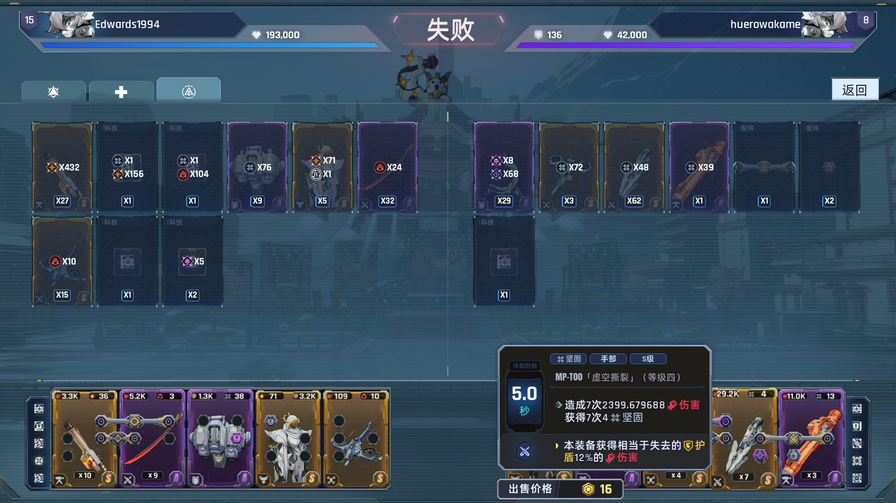
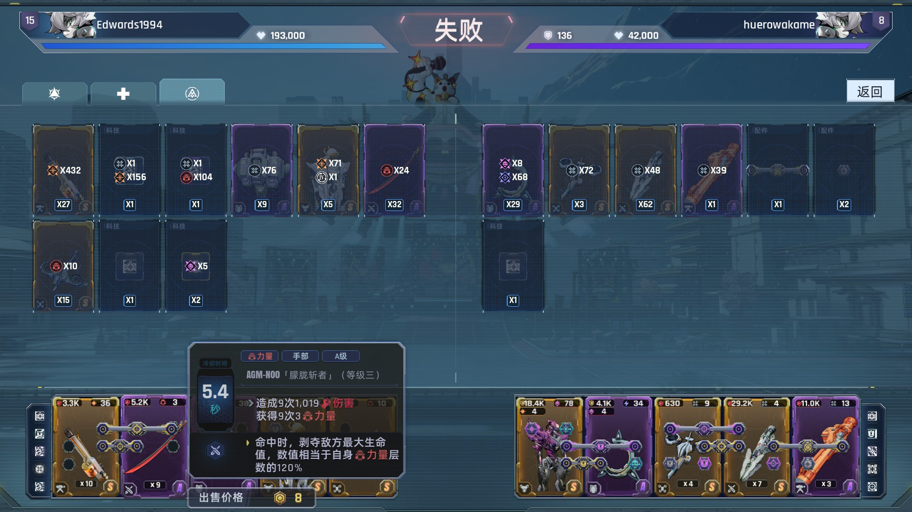
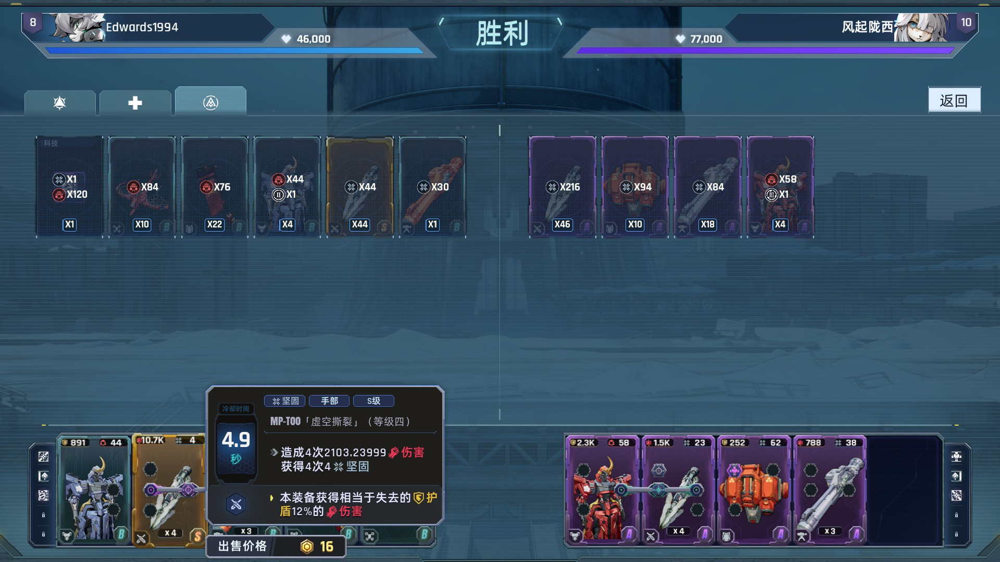

战后武器说明显示六位小数的伤害
BUG-005 · 数值格式问题，单场观察。Windows Steam Demo 1.0.0.2218，Build 26644085，2026-11-15。
操作与观察
从第 10 天末战结算打开统计，悬停对方的 S 级手武 MP-T00「虚空撕裂」，再对照己方手武的说明。
对方说明写「造成 7 次 2399.679688 伤害」，同页我方手武说明显示「造成 9 次 1,019 伤害」。
预期及复测方法
同类武器说明的伤害数字应采用一致且便于阅读的精度。当前现象影响阅读，本局没有测到它影响结算。
用同类型装备叠出有小数的伤害后再查看说明，检查是否只在特定成长属性或战后界面出现。


run05补充
2026-11-16第6天，莫瑟/S虚空撕裂战胜风起陇西后打开增益统计，再右键己方手武：显示4次2103.23999伤害。与原报告同类精度问题，本局再次观察1次；没有证据证明伤害计算错误。菜单版本待核实，Steam Build26694005。
